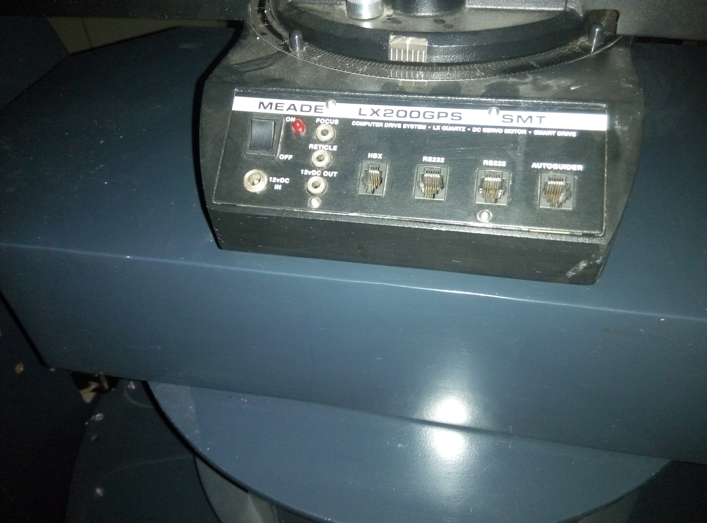
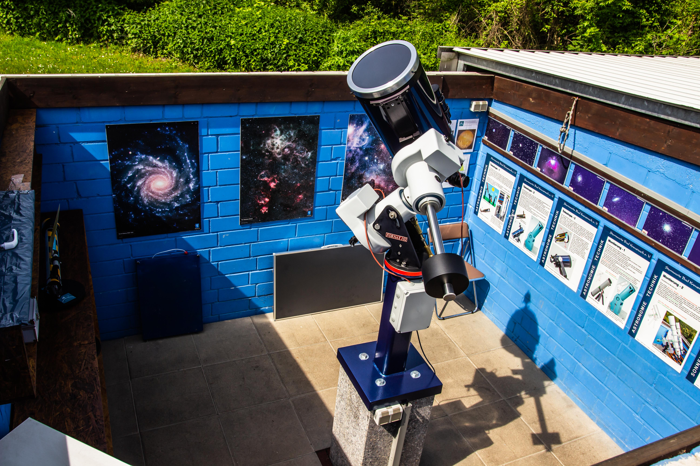
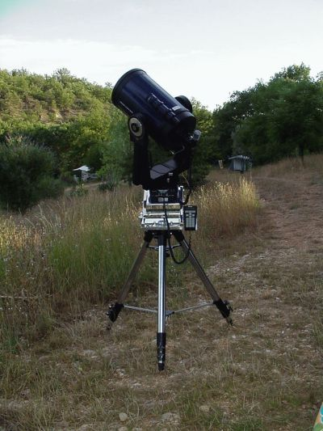

Meade LX200
The first telescope you point by keying a catalog number into a red-lit keypad

Overview
The Meade LX200 is a line of Schmidt-Cassegrain telescopes on computer-controlled altazimuth mounts, introduced in 1992 by Meade Instruments of Irvine, California. Meade was founded in 1972 by John Diebel, a Caltech-trained electrical engineer; after a near-collapse under the Harbor Group, Diebel and three partners bought the company back in February 1991 for $1,000 and spent roughly $1 million developing the LX200. The result — an 8-inch or 10-inch telescope with a hand controller that knows 64,359 objects — sold for about $2,000, roughly half the cost of comparable computer-controlled systems and the first time such capability was priced for the average consumer.
The hand controller is a 16-key keypad with a 2-line LCD: dedicated Object keys (M for Messier, STAR for alignment stars, CNGC for the NGC and other catalogs), PREV/NEXT, GO TO, MODE, ENTER, N/S/E/W direction keys, FOCUS, a MAP key that turns the red LEDs into a flashlight for reading charts, and four speed keys (SLEW 4°/second, FIND 1°/second, CNTR 16× sidereal, GUIDE 2× sidereal). The workflow replaced star-hopping: pick an object, type its catalog number, press GO TO, and the mount slews up to 8°/second and settles it in the eyepiece, then two-axis tracking holds it there. An RS-232 port allowed PC control, and the LX200's command protocol became a de-facto standard for amateur telescope automation. The line was used by Project Galileo and dozens of observatories, and later "GPS" models carried the name into the 2000s.
Deep dive
In 1992, a consumer device with a two-line LCD contained 64,359 objects: 110 Messier, 7,840 NGC, 8 planets, 351 alignment stars, and 56,050 entries from the SAO, UGC, IC, and GCVS catalogs. The interaction is catalog-driven: type a number, and the telescope does the pointing. This is the same shift that database terminals brought to business computing, applied to the night sky — the amateur astronomer's task changes from finding an object to selecting one.
The LX200's keypad was engineered for a dark outdoor environment: red-LED backlighting preserves scotopic (night) vision, beeps confirm entries without looking, and the speed keys give graded manual control — slew to rough position, find, then center and guide by hand, a physical gradient from machine to human control. The MAP key doubles as a red flashlight for reading star charts. Few interfaces of the era were designed around a specific physiological constraint the way the LX200 was.
The LX200's RS-232 command set — simple text commands over serial — became the de-facto standard for amateur telescope control, implemented by later vendors and hobbyist projects for decades. The telescope was also one of the first consumer instruments to make "computerized pointing" the norm rather than the expensive exception: what had cost $4,000+ as a retrofit option was now the base product.
The museum's Tektronix 7854 (1980) is a lab instrument whose RPN keyboard works on waveforms; the LX200 is a consumer instrument whose keypad works on the sky. Where the 7854 turns the oscilloscope into a computer, the LX200 turns the computer into the telescope's pointing system. No other exhibit is a database-driven pointing instrument, and none designs its interface around night vision.
Team & pioneers
- Meade Instruments Corporation. Manufacturer, Irvine, CA; founded 1972 by John Diebel; ~$1M LX200 development budget.
- John Diebel. Founder; Caltech-trained electrical engineer; led the 1991 buyback and LX200 development.
- Steven Murdock. Meade COO during the LX200 launch era.
Media


Sources
- Wikipedia — Meade LX200
- Meade LX200 Classic manual (1996, Internet Archive)
- FundingUniverse / International Directory of Company Histories — Meade Instruments
- Wikimedia Commons — File:Meade LX200 in Jiamusi University Observatory.jpg
- Wikimedia Commons — File:Meade LX 200 emc.jpg
- Wikimedia Commons — File:Meadelx200 kl.jpg